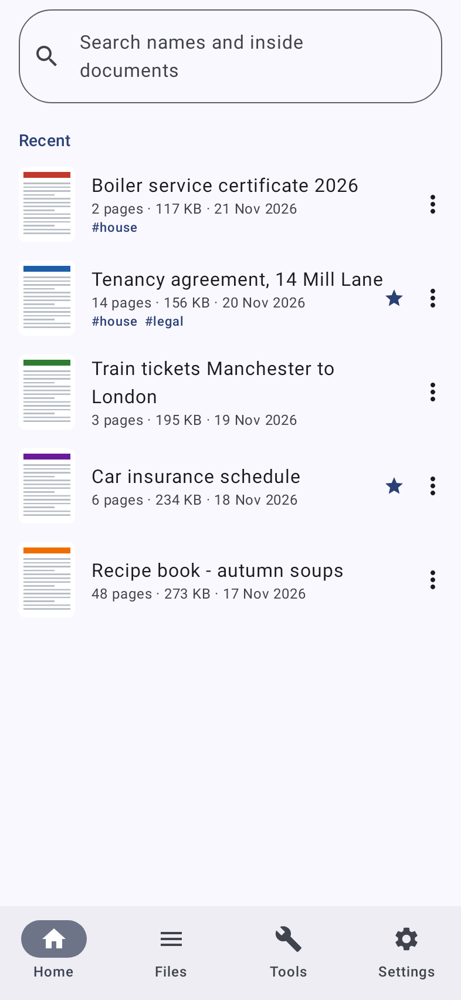
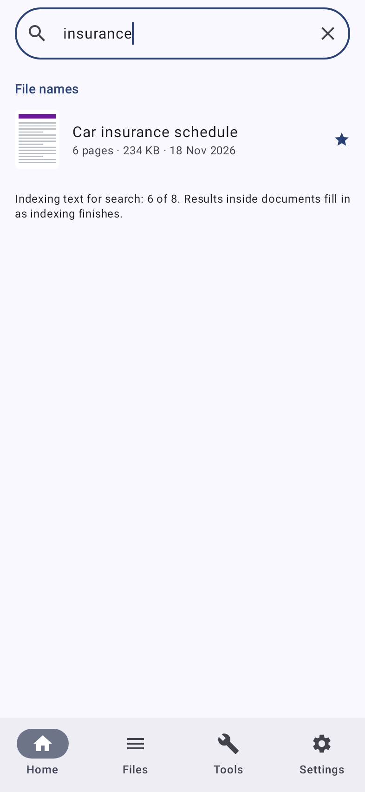
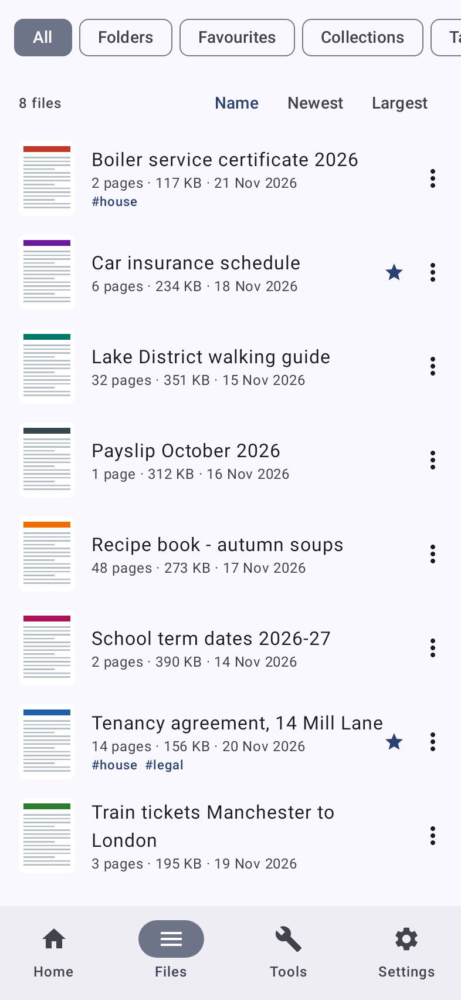
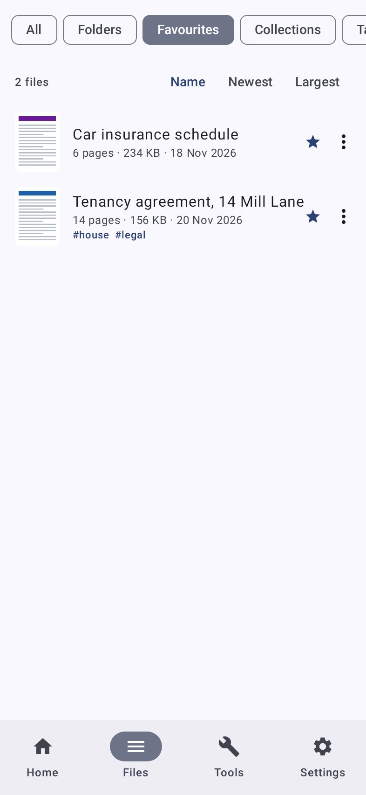
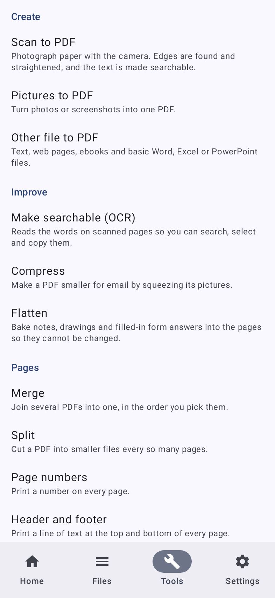
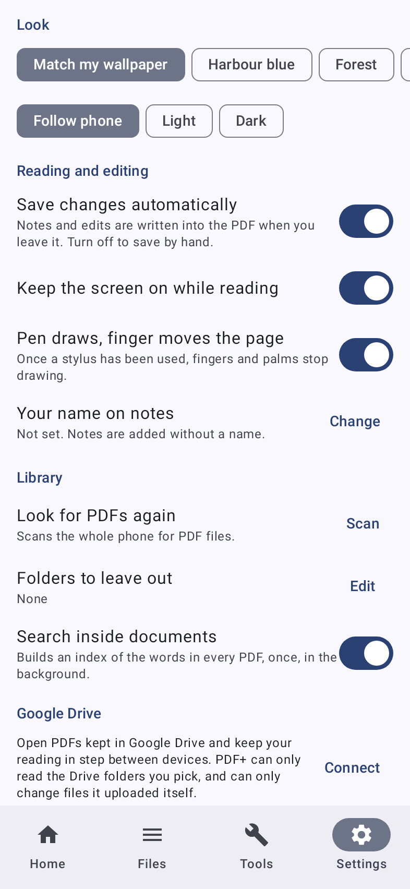
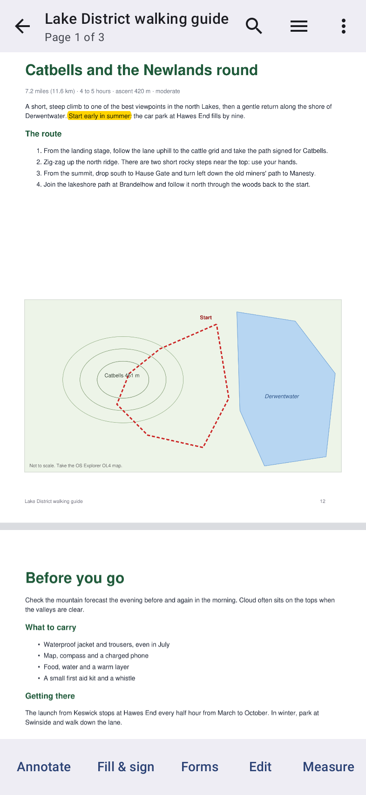
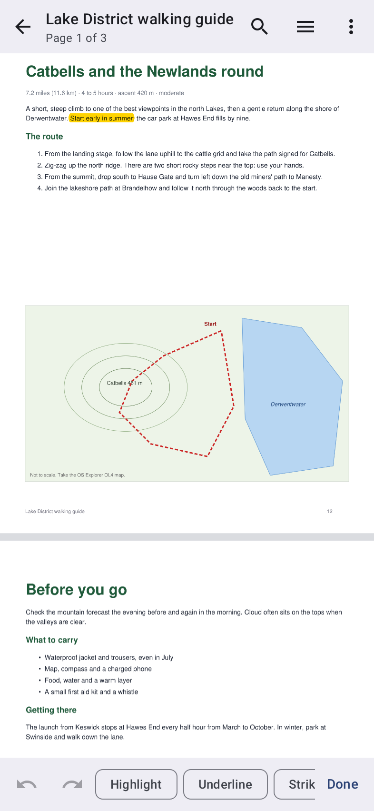
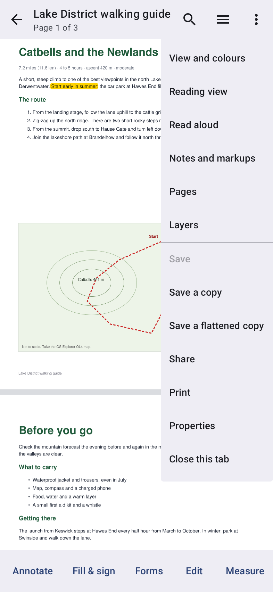
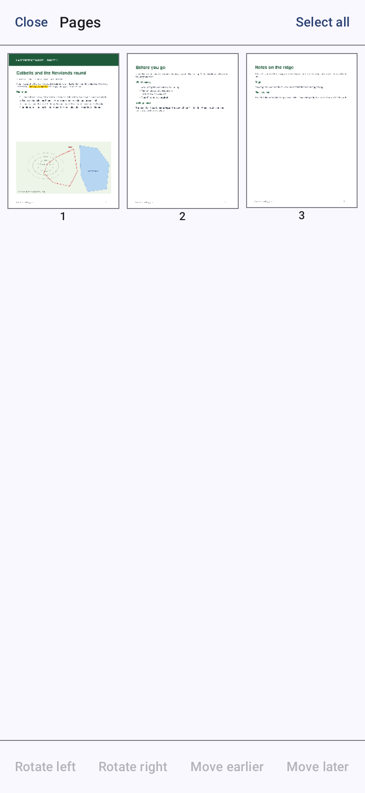

The PDF app that does the lot. Free.
Read, mark up, fill in, sign, edit, scan, convert and protect PDFs on your Android phone or tablet.
Editing text, organising pages, compressing, passwords, OCR and scanning are the things most PDF apps keep behind a subscription. In PDF+ they are all included.
Download for AndroidHow to install
- Version 1.0
- Android 11 or later
- 35 MB
Free, with nothing to unlock. No adverts, no account with the developer, no tracking. Compare or read the release notes.
Chrome may say the file might be harmful. It shows this for app files that do not come from Google Play. Choose Download anyway.

- No advertsNothing to close, skip or wait for.
- No trackingNo account and no analytics.
- No subscriptionEvery tool is included.
- Open sourceAnyone can read the code.
A look inside
These are the real screens, drawn from the app's own code with made-up documents. Swipe or scroll sideways to see them all.









How it works
There is nothing to buy and no account to make. PDF+ works on the files already on your phone.
Allow files
PDF+ lists every PDF on the phone, so you can find them in one place.
Open and work
Read, mark up, fill in and sign. Changes are saved into the PDF in the standard way.
Use the tools
Scan paper, make scans searchable, merge, split, compress and convert.
Everything is in, and all of it is free
Nothing below is held back for a paid tier, because there is no paid tier.
Reading
- Read comfortably
- Scroll, one page or two-page spreads, deep zoom, and day, night, sepia and custom colours.
- Reading view and read aloud
- Text re-laid to fit the screen, and read aloud with your phone's voices.
- Find anything
- Folders, favourites, tags and collections, and search inside your documents.
Working
- Mark up
- Highlight, underline, draw, type, notes, shapes, stamps and pictures.
- Fill and sign
- Forms, tick boxes, drawn or typed signatures, or a certificate-based digital ID.
- Edit
- Change a line of text, move or remove a picture, add text, images and form fields.
- Measure drawings
- Set the scale, then measure lengths, routes and areas, and switch layers.
Tools
- Organise pages
- Reorder, rotate, delete, extract, crop and insert pages. Merge and split files.
- Scan and convert
- Scan paper to PDF, on-device OCR, compress for email, and convert to and from pictures, text, Word and Excel.
- Protect
- True redaction, passwords and permissions, an app lock and a private folder.
Across devices
- Google Drive, if you want it
- Open PDFs from Drive folders you choose, and keep your place the same on all your Android devices.
- New-version notice
- PDF+ tells you when a newer version is out.
Your documents stay on your phone
No servers
PDF+ has no account and no server. The publisher never receives your files.
No ads, no tracking
There is no advertising, analytics or tracking, in the app or on this site.
Extras you choose
Google Drive, summaries with your own key and the new-version check are optional, and explained in the privacy policy.
Installing and updating
PDF+ is not on Google Play, so your phone asks a couple of extra questions the first time.
Download the app file
Tap Download on your phone. The file is called PDFPlus.apk and is about 35 MB. If Chrome says the file might be harmful, choose Download anyway.
Allow the install
Open the file. The first time, Android asks you to allow your browser to install apps. Allow it, go back and tap Install. If Google Play Protect steps in, choose More details, then Install anyway.
Updating later
PDF+ tells you when a newer version is out. Install the new file over the old one and everything you have saved is kept.
Version 1.0, released 14 November 2026. See the release notes, or check your download.
Questions
Is PDF+ really free?
Yes. There is no paid version, no subscription and no adverts. It is also open source: the code is on GitHub.
Is PDF+ on Google Play?
No. It is downloaded from this site as an Android app file. It needs Android 11 or later.
How well does PDF to Word work?
PDF to Word and PDF to Excel carry over text and simple tables. Complex page layouts do not survive.
How does text editing work?
Text editing works a line at a time and redraws the line in a standard font.
Does the scanner need Google?
Yes. The scanner uses Google's on-device document scanner, so it needs Google Play services.
How do I update PDF+?
PDF+ tells you when a newer version is out. Download it from this site and install it over the one you have. Your settings are kept.
Every PDF tool, nothing to pay
Free, with no adverts and nothing to unlock. Made by the developer of several other free Android apps: see them all.